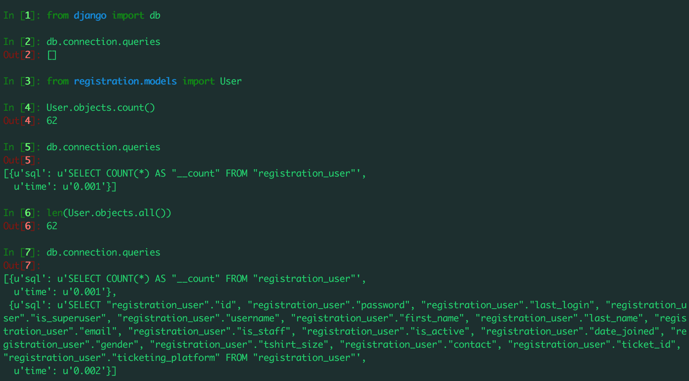
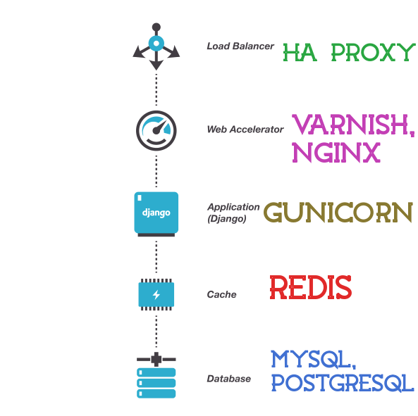

Optimizing Django For Building High Performance Systems
Created by Sanyam Khurana | @ErSanyamKhurana | @CuriousLearner
Who am I?
- One of YOU! -- Part of the community
- Mozilla Representative
- Open Source Contributor
- Goes by "CuriousLearner" all over the web
Django
The web framework for perfectionists with deadlines.
But perfection is often forgotten due to deadlines
Server not responding - 5XX

Database Access Optimizations
Profiling your Applications
Understanding Database level optimizations
Two obvious things
- Indexes using `Field.db_index` or `Meta.index_together`; speed up filter(), exclude(), order_by() etc.
- Appropriate usage of field types
Understanding Querysets
- Querysets are `LAZY`
- Understand how they are held in memory & when they are evaluated.
Understanding cache attributes
- In general, non-callable attributes will be cached
student = Student.objects.get(id=1) student.first_name # Accessing first_name by hitting the database student.first_name # No more hitting the database, first_name is already cached.
- These would issue multiple calls to database
student = Student.objects.get(id=1) student.objects.all() # Hits the database to get everything from objects manager student.objects.all() # Hits the database again.
- Be aware of Django templates -- they don't use parantheses doesn't mean they cache the result
- For your own properties use `@cached_property` decorator
Separate Database and Python processing
Form chains of filtered querysets till you get the queryset you want Need more Power? Use RawSQL Still need more power? Use raw SQL queries
from datetime import datetime, timedelta
month_before = datetime.now() - timedelta(days=30)
User.objects.filter(date_joined__gt=month_before)
users = User.objects.filter(date_joined__gt=month_before)
.exclude(name__startswith="san")
.filter(user_type=User.CLIENT)
# users in a queryset
for user in users: # users would be only evaluated now
# ... do something ...
It would also help you prevent race conditions in your database.
User.objects.all().update(credits=F('credits') + 1)
Let's see what the corresponding SQL query would look like:
User.objects.get(
Q(name__startswith='san'),
Q(joined_date=date(2017, 3, 18)) | Q(joined_date=date(2017, 3, 18))
)SELECT * from registration_users WHERE name LIKE 'san%'
AND (joined_date = '2017-03-18' OR joined_date = '2017-03-18')
Book.objects.aggregate(average_price=Avg('price'))
# {'average_price': 13.67}Book.objects.annotate(num_authors=Count('authors')).filter(num_authors__gt=1)len(User.objects.all()) # What newbies dousers = User.objects.filter(first_name__startswith='s')
if users: # Another mistake newbies make
# ... do something ...
len(User.objects.all()) # Use User.objects.count()users = User.objects.filter(first_name__startswith='s')
if users: # Use exists()
# ... do something ...
# All operations using querysets are fast
# That is what all databases are good at.
User.objects.filter(first_name__startswith='s').count()
users = User.objects.filter(first_name__startswith='s')
# Counting objects in Python
# Slower as includes database call as well as python processing
len(users)
# Django template filter
# Much slower because of Python processing
# and template overheads
{{ users | length }}
Use exists() for checking if there are entries in database
users = User.objects.filter(first_name__startswith='s')
if users:
# ... do something ...
User.objects.exists()
Avoid retreiving things that you don't need
select * from registration_user
User.objects.all()select first_name from registration_user
User.objects.all().values_list('first_name')
User.objects.all().values('first_name')Use bulk create
# Instead of hitting database various times like:
User.objects.create(first_name='Sanyam')
User.objects.create(first_name='Amit')
...
# Use bulk_create ( just 1 query )
User.objects.bulk_create([
User(first_name='Sanyam'),
User(first_name='Amit'),
])
Similarly...
for ManyToManyFields
sanyam = User.objects.get(first_name="sanyam")
amit = User.objects.get(first_name="amit")
# Instead of using
PyDelhi.members.add(sanyam)
PyDelhi.members.add(amit)
# Add multiple at once
PyDelhi.members.add(sanyam, amit)
Use foreign key values directly
# Instead of
user.post.id
# Use values directly like:
user.post_idInspecting raw SQL queries shot behind the scenes by ORM
The untold story of humungous tasks
Tasks which requires a lot of processing
Processing them in the django request-response cycle would hurt your application really bad
Example: Sending emails, SMS...
Doing a lot of processing / aggregation
Avoid those 5XX responses and start using task queues such as Celery
They would help you to asynchronously process and update the results later
Use RabbitMQ/Redis as broker and RESULT_BACKEND
Optimizing Templates
Cache particular portions
Use Memcached cache
given a URL, try finding that page in the cache
if the page is in the cache:
return the cached page
else:
generate the page
save the generated page in the cache (for next time)
return the generated pageTemplate fragment caching
{% load cache %}
{% cache 500 sidebar request.user.username %}
... sidebar for particular user ...
{% endcache %}Use `cache_page` decorator
from django.views.decorators.cache import cache_page
@cache_page(60 * 15) # cache for 15 mins
def my_view(request):
# ... some magic happens ...
# ... return Response ....The famous n+1 access problem ;)
Books having Author(s)
One query to fetch N books, and then N queries to fetch author(s) for each book
Total N+1 queries
SELECT * FROM Books;
SELECT * FROM Author WHERE book_id = ?;
Why not simply do?
SELECT * FROM Author;Extensively use `select_related` (for OneToOneField or ForeignKey field) and `prefetch_related` (for ManyToManyField) if you know what fields you might need.
book = Book.objects.select_related('author').get(id=1)
# Will not hit the database again since author was already pre-populated
author = book.authorFrom 101 queries (in case of 100 books) to just 2 queries in a typical use case.
Architecture you *should* consider having in your Django applications
 Image credits to Naren Arya from IMPYTHONISTWhere to go from here?
Thanks!
As always, profile first & then optimize
Questions?
Shout out on Twitter: @ErSanyamKhurana
Github: CuriousLearner
Shoot a mail at: Sanyam@SanyamKhurana.com
My websites:
www.SanyamKhurana.com | www.TheGeekyWay.com